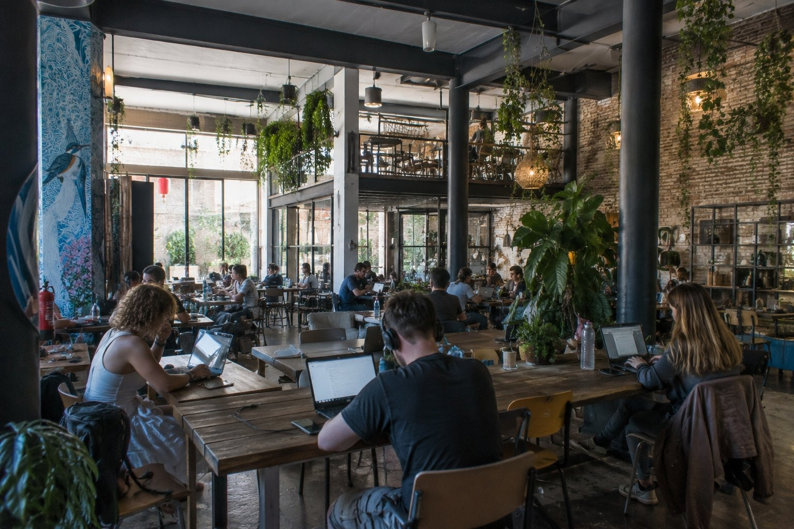

1
Redo för publicering
Hög prio · 284
Natur/äventyr
malaga
2. The Living Room Coworking
♻ 1 återanvändbara bilder — använd en av dessa i stället för att skapa ny:
bilder/web-ready/malaga/digital-nomad-guide-malaga-the-living-room-coworking-malaga.jpg
bilder/web-ready/malaga/redo/digital-nomad-guide-malaga-the-living-room-coworking-malaga.jpg
Prompt
Publishing metadata
- Prioritet
- Hög (284) · bas 10 | matchar sidtitel/H1 +80 | matchar H2-sektion +55 | 52 träffar i sidtext +35
- Alt
- The Living Room Coworking i Málaga
- Caption
- The Living Room Coworking i Málaga
- SEO
- The Living Room Coworking i Málaga. En del av reseguiden om Málaga med naturligt folkliv och tydliga platsdetaljer.
- GPS
- 36.7213, -4.4214
- Target
- https://malaga.se/digital-nomad-guide-malaga/ / the-living-room-coworking